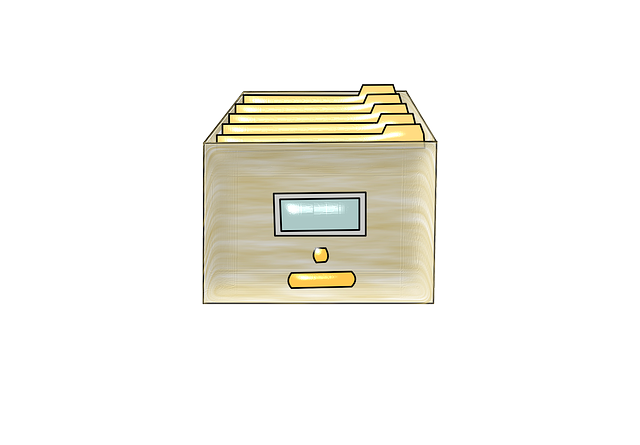

Estudios
CPR AFundación A Coruña
Ciclo Superior en Desarrollo de Aplicaciones Web | 2020 - 2022
- Programación con Java, JavaScript, Python (Django) y PHP.
- Bases de datos con MariaDB y SQLite.
- Control de versiones con Git.
- Diseño web con HTML y CSS.

CPR AFundación A Coruña
Ciclo Superior en Administración y Finanzas | 2016 - 2018
© 2022 Roi Baldomir Ares